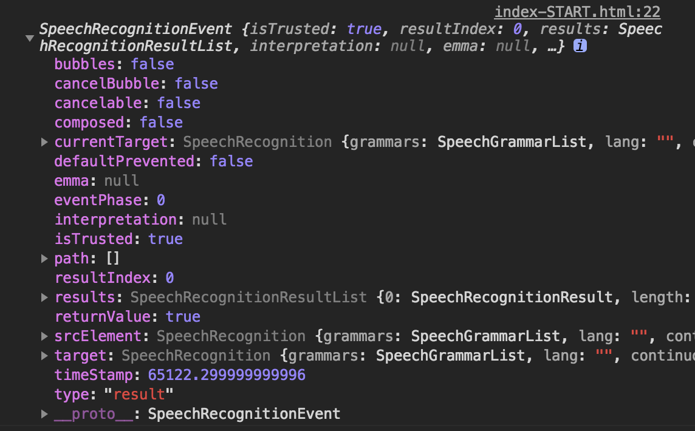
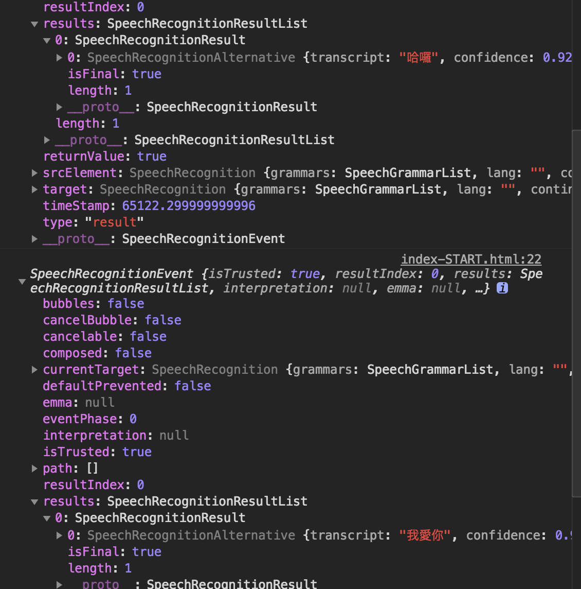
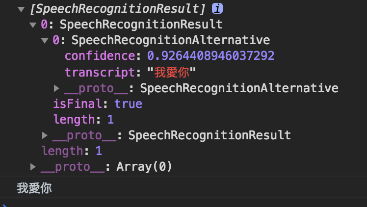

Demo(需打開麥克風)
上個單元是攝影機，這個單元要來玩麥克風語音SpeechRecognition這個功能真的滿強大的
採訪時自動輸出文字、上字幕等感覺都可以應用到這個技術
以下部分內容節自王郁翔-好想工作室第一屆鐵人賽 JS30-Day20-Speech Detection
SpeechRecognition
今天的核心技術，能將聲音辨識出語言的 SpeechRecognition 介面
此範例會用到的
屬性：
SpeechRecognition.lang：此屬性可用來設定或回傳目前指定的語言，若無設定會自動抓取 HTML 中的 lang 指定的語言，以上都無設定的話則會判斷使用者端所使用的語言。
事件
SpeechRecognition.onstart：當語音辨識伺服器(麥克風)開始接收傳入的音訊時便會觸發此事件。SpeechRecognition.onend：當使用者設備結束與語音辨識伺服器(麥克風)的連結時會觸發此事件。SpeechRecognition.onresult：當語音辨識伺服器(麥克風)結束辨識並回傳結果時會觸發此事件。
方法：
SpeechRecognition.start()：開始接收輸入的音訊，並啟動語音辨識伺服器(麥克風)的辨識服務。SpeechRecognition.stop()：停止接收輸入的音訊，並回傳目前為止的音訊內容。
建立語音物件
建立，然後執行。1
2const recognition = new SpeechRecognition();
recognition.start();
此時網頁就會出現要你開麥克風的視窗了。
監聽
1 | recognition.addEventListener('result', translateSound); |
這裡我們透過onresult接收到麥克風收到的音訊後
將event印出來看看

可以發現我剛剛講了”哈囉”和”我愛你”的結果存在results裡面

由於result事件執行接收到結果後，本地就會自動結束跟麥克風的連結
所以我們在結束後，再次執行(start)新的辨識功能
1 | let dataArray = Array.from(event.results); |

得到我愛你這個字串
儲存並輸出文字
我們已經可以取得文字，接下來要怎麼輸出呢？1
2
3let p = document.createElement('p');
const words = document.querySelector('.words');
words.appendChild(p);
一開始我們先在全域建立一段文字p，並將它塞入words裡appendChild剛好在Day19有介紹過
最後指定p的文字內容textContent等於我們的text1
2
3
4
5function translateSound(event) { //結果會在event中
let dataArray = Array.from(event.results);
let text = dataArray[0][0]['transcript'];
p.textContent = text
};
換行刪除
取得回傳的結果後，剩下的就是看我們想做甚麼有創意的js操作了
可以參考更多事件
這邊我只簡單嘗試換行和刪除的功能1
2
3
4
5
6
7
8
9
10
11
12
13
14
15
16
17
18let mytext = []
function translateSound(event) { //結果會在event中
let dataArray = Array.from(event.results);
let text = dataArray[0][0]['transcript'];
console.log(text)
if (text === '換行'){
mytext = []
p = document.createElement('p');
words.appendChild(p);
}else if (text === '刪除'){
mytext.pop()
p.textContent = mytext.join('');
}else{
mytext.push(text)
p.textContent = mytext.join('');
}
};
我先建立一個陣列儲存我的文字，我希望他可以一直累積下去而不是原本的取代掉我的文字
所以我每得到一次text就存入mytext的陣列中，再join('')轉換成自串給p
當我說”換行”時，建立新的p，並把我的mytext清空，此時不需做文字輸出。
當我說”刪除”時，刪除mytext最後輸入的那筆資料(可能是一句話或單字)，刪除後再出輸出一次文字。
程式碼
1 | window.SpeechRecognition = window.SpeechRecognition || window.webkitSpeechRecognition; |